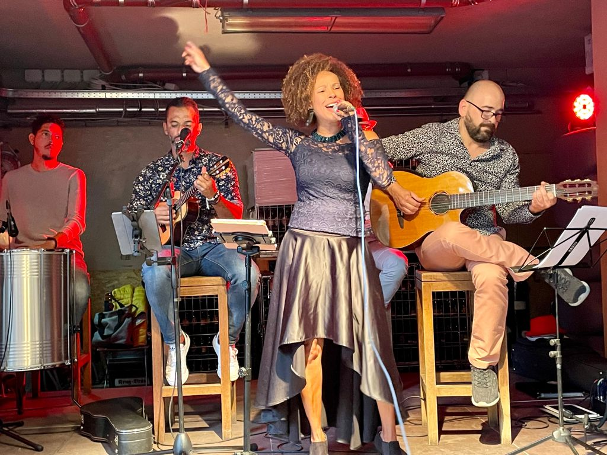
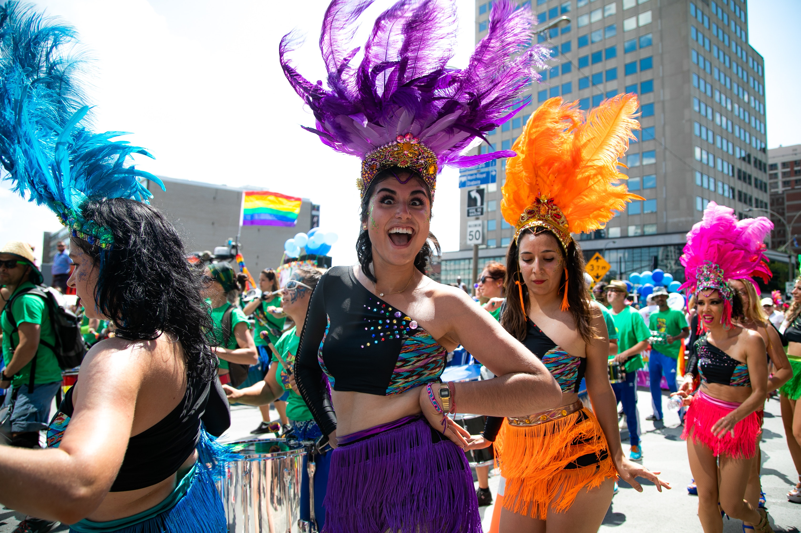

Bem Brasil APS sta proponendo una serie di attività musicale, culturale, sportive, socievole e di tutto piacevole.
Musica brasiliana
L’associazione promuove la conoscenza e la pratica di musica brasiliana - dalla Samba e la Bossa Nova a pezzi musicali di chorino e canto classico.
Gli associati possono godere dei concerti al vivo e partecipare a corsi di chitarra, canto e gli percussioni.
Informati sotto sulle attività attuale!

Prossime attività
- Sabato 12 marzo: Samba con Aquarela Axé al BUNKER a Bolzano.
- SPECIALE!! a partire da Marzo: lezioni privati di chitarra, cavalquinho, ukulele, canto
- Giugno tbd: Concerto con Sombra a Bolzano.
Conversazione e culinaria
“… Bom dia, tudo bem?…”
Vogliamo creare uno spazio per praticare il portoghese - sia per chi vuole imparare la lingua che per chi ha semplicemente voglia di parlare.

… e se c’è anche qualcosa da mangiare, tanto meglio!

Prossime attività
- a partire da Maggio: incontri informali nel parco Semiruali, BZ
Ballo e sport
In Brasile, la gente balla e festeggia. Ma non solo. Le attività sportive, specialmente il calcio, sono anche una parte fondamentale della cultura brasiliana.
L’associazione vuole offrire l’opportunità di conoscere e provare il samba brasiliano. E lo stesso vale per le attività sportive di gruppo.

Prossime attività
Vuoi essere avvisato quando sono previste nuove attività?
Scrivici un’email all’indirizzo qui sotto.
Check out this page I created. It carries a lot more details…